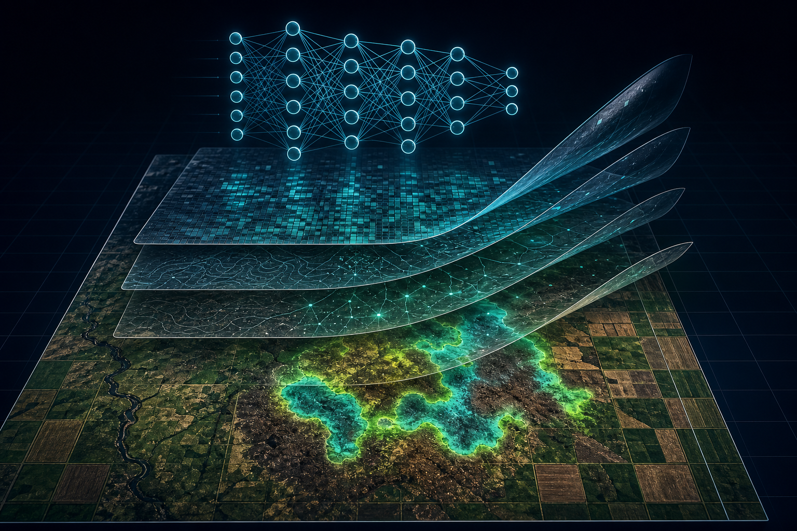
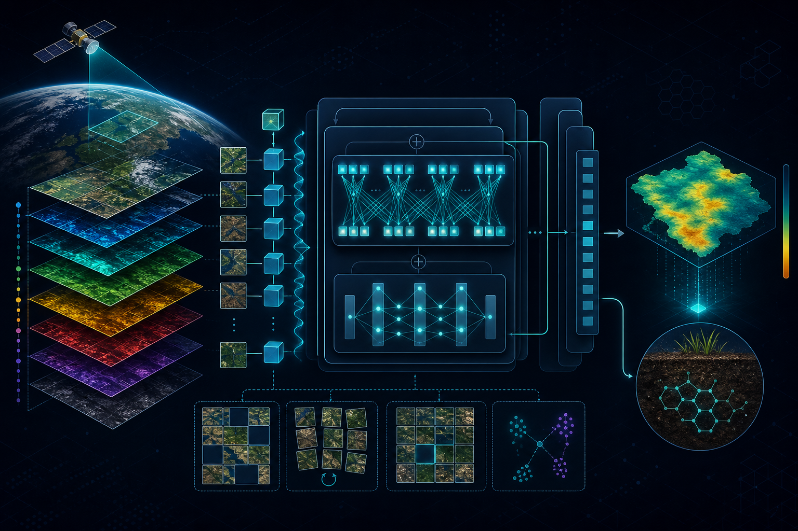
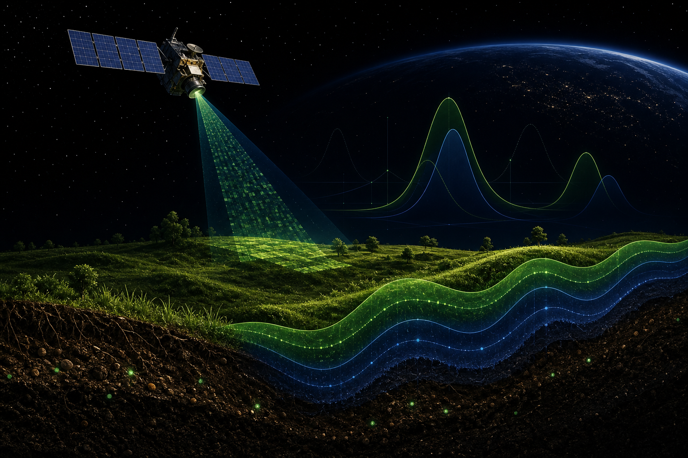

Explainable AI
SOC Prediction
SHAP
Remote Sensing
Machine Learning
I develop machine learning and deep learning models to extract meaningful insights from satellite and geospatial data for a more sustainable planet.

About Me
I am a Remote Sensing Engineer, currently an Earth Observation and Machine Learning Scientist at The Landbanking Group GmbH in Munich, developing the STOA model for remote sensing image processing in support of nature conservation and regenerative agriculture.
Previously, I was a Postdoctoral Researcher at the University of Tübingen under Prof. Dr. Thomas Scholten, applying computer vision, machine learning, and deep learning to Earth observation data for environmental insights, particularly related to soil. My background includes a Bachelor's in Geomatics Engineering, a Master's and PhD in Remote Sensing.
Extracting geospatial information from multi-source satellite data.
Designing deep learning models for detection and classification.
Using optimization to solve complex environmental problems.
Recent Publications



Tools & Technologies
 GEE
GEE
 QGIS
QGIS
 CUDA
CUDA
 ArcGIS
ArcGIS